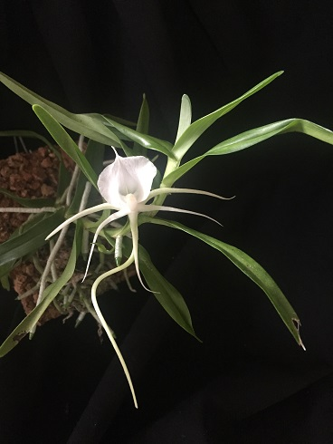
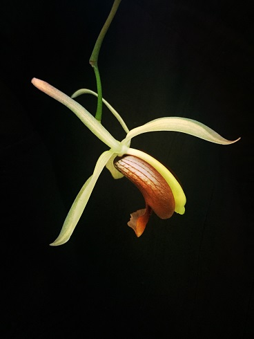
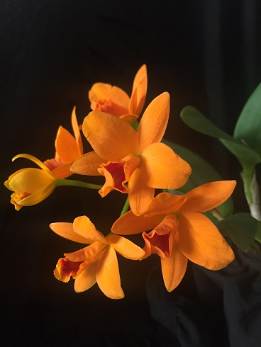

Psychopsis Mariposa Peloric

Psychopsis Mariposa Peloric care
Commonly nick-named the 'Giraffe Orchid', or Mariposa orchid (butterfly) Psychopsis are fantastic orchids that produce flowers one after another on the same spike for 10-15 years. Never cut the flower spikes even if you should accidentally break one as they can branch below the break and continue to flower. The flowers last about three weeks before falling off and within another three weeks or so, another bud forms and repeats the process. Water as the potting mix approaches dryness or just dries out. Grow as you would for a Phalaenopsis. this is particular variety is the peloric form in which the petals have taken up the shape and size of the lip. This easy to grow and flower plant will provide years of enjoyment. Use clean water low in mineral content for best results. Do not use softened water as it contains salt.
Angraecum germinyanum

Angraecum germinyanum care
A higher elevation Madagascar species from a cloud forest environment that has a pendulous growth habit, and shiny, smooth leaves. The non-resupinate flowers have beautiful spidery petals offset neatly by the round somewhat large disc shaped lip. The flowers have an excellent fragrance at night. These plants do best at cool to intermediate temps and once they start flowering many spikes can be produced over a period of several months. Very easy to grow and flower!
Coelogyne usitana

Coelogyne usitana care
Perhaps one of the most beautiful of the Coelogyne with white flowers and a chocolate-red lip. Fragrant. From the Philippines. Described recently in 2001. Up to 20-inch flower spikes with 10 to 20 flowers. This blooms off and on throughout the year. The flower spikes arch and hang downwards and produce a number of flowers over several weeks one at a time. It is not unusual for the older leaves to be dying back as the newest growths flower.
Rth. Shinfong Little Sun ‘Youngmin Golden Boy’

Rth. Shinfong Little Sun ‘Youngmin Golden Boy’ care
Cattleya hybrid. These orchids need very bright light. Keep moist in summer seasons and do not allow mix to dry, in winter keep the mix slight dry and reduce watering. Keep good air movement to avoid fungal growth. This plant requires living room temperature.